Program Operator
Program Operator portal: setup and administration
Set up a Patient Support Programme and keep it running: the product catalogue, the programme and its enrolment form, the doctor and pharmacy networks, the patient places, and the people who work in the portal.
For Operator Admins and the Operator Super Admin.
Click the screenshot to enlarge it.
Before you start
The Program Operator portal is a web page for a computer. Everything in it belongs to one client: the scientific office whose programmes your organisation runs. Three kinds of user sign in:
- Operator Admin sets programmes up: products, programmes, networks, places, users and settings. This guide is for you.
- Operator Super Admin has the same powers as an Operator Admin, plus a few more (see For the Super Admin). Each workspace has one.
- Program Coordinator works the patient cases. Case work has its own guide: the Coordinator guide.
Your sign-in. Your mobile number and a password. The admin who creates your account sets a temporary password and gives it to you in person. The portal sends no text message or email.
Setting up a programme follows this order:
| Step | Where |
|---|---|
| 1. Add the medicine and price its batches | Product Hub |
| 2. Build the programme | Programs → New program |
| 3. Publish its enrolment form | Programs → Enrollment form |
| 4. Add doctors and pharmacies | Doctor network, Pharmacy network |
| 5. Give out patient places | Coupon allocation and the two networks |
| 6. Launch it | the programme's own page |
| 7. Give coordinators access | Users |
Sign in
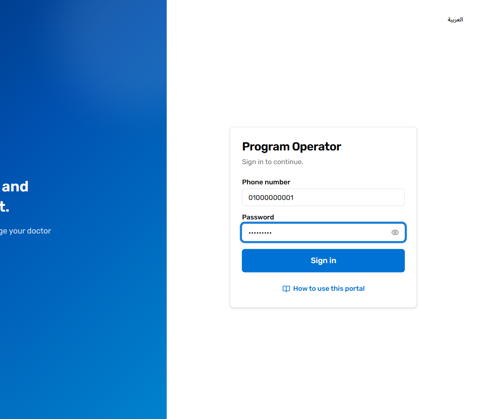
- 1Phone number: your own mobile number.
- 2Password: the temporary password you were given, or your own.
- 3The eye shows the password while you type it.
- 4Sign in opens the portal.
- 5Switch the screen between English and العربية at any time.
- 6How to use this portal opens this guide in a new tab.
Find your way around
After you sign in, the portal opens on Programs. The menu on the side lists every page; click one to open it.
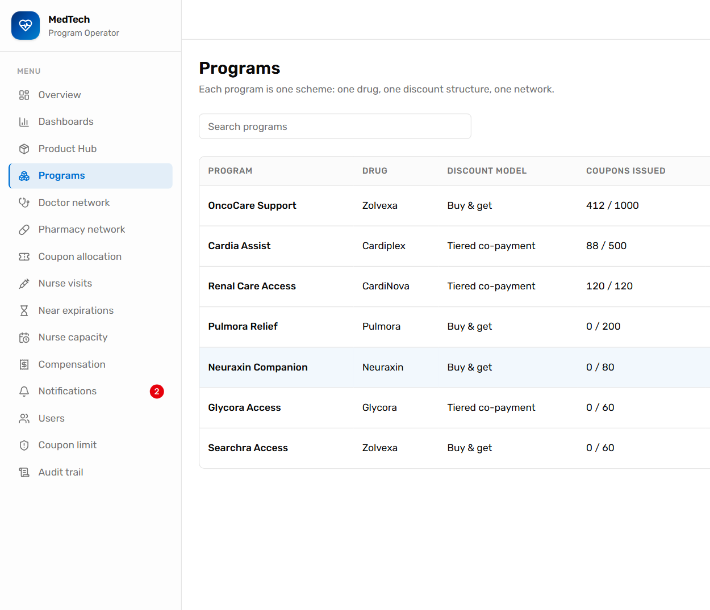
- 1Overview: where your programmes stand today.
- 2Programs: build and manage programmes. The page you are on is highlighted.
- 3Notifications: your alerts. The red number counts the unread ones.
- 4Users: the people who work in this portal.
- 5Audit trail: the record of every change.
The menu also holds Dashboards, Product Hub, Doctor network, Pharmacy network, Coupon allocation, Nurse visits, Near expirations, Nurse capacity, Compensation and Coupon limit. Each has its own section below.
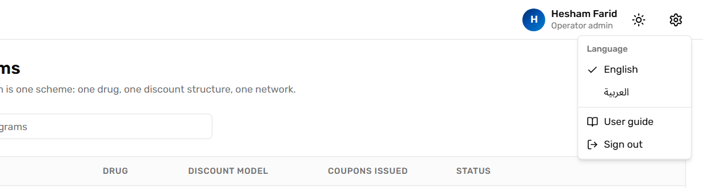
- 1Your name and role.
- 2Switches between the light and the dark screen.
- 3Language: English or العربية.
- 4User guide opens this guide in a new tab.
- 5Sign out: always sign out on a shared computer.
Overview
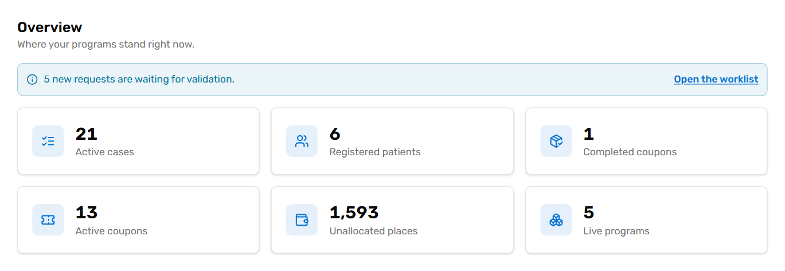
- 1Overview shows where your programmes stand right now.
- 2How many new requests are waiting for validation. Validation is the coordinators' work; they open these requests from their worklist.
- 3Active cases, next to Registered patients and Completed coupons.
- 4Unallocated places: places that no doctor, pharmacy or coordinator holds yet.
- 5Live programs: how many programmes are open for enrolment.
For detailed figures, use Dashboards.
Product Hub
Every programme is built on a product, so the catalogue comes first. The scientific office gives you the list; you enter it here.
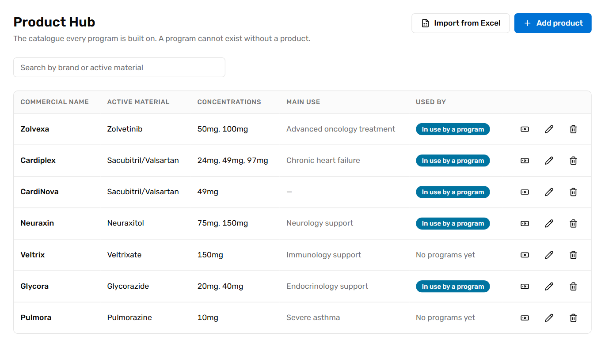
- 1Import from Excel adds or updates many products at once.
- 2Add product adds one product.
- 3Search by brand or active material.
- 4Used by shows whether a programme runs on the product.
- 5The pricing button opens the product's batches and prices.
- 6The pencil edits the product.
- 7The bin removes it. A product cannot be removed while a programme runs on it.
Add or edit a product
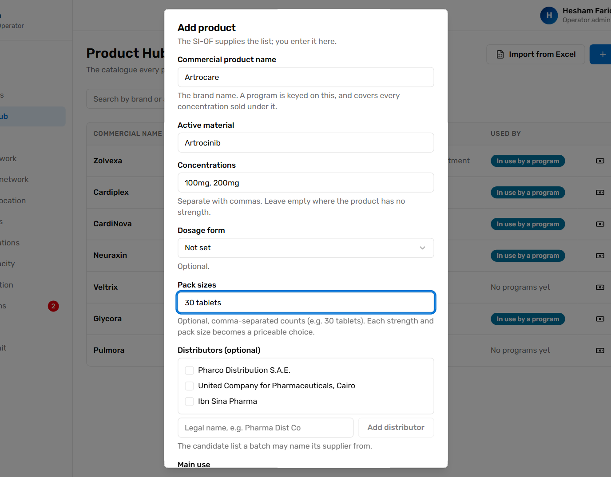
- 1Commercial product name: the brand name. A programme is tied to this name and covers every concentration sold under it.
- 2Active material.
- 3Concentrations, separated by commas, for example 100mg, 200mg.
- 4Dosage form: tablets, injection or liquid. Optional.
- 5Pack sizes, separated by commas, for example 30 tablets. Optional. Each strength and pack size becomes a choice you can price.
- 6Distributors (optional): the suppliers a batch may name. Type a new one and press Add distributor to add it to the list.
Press Add product (or Save when editing) at the bottom of the form.
Import products from Excel
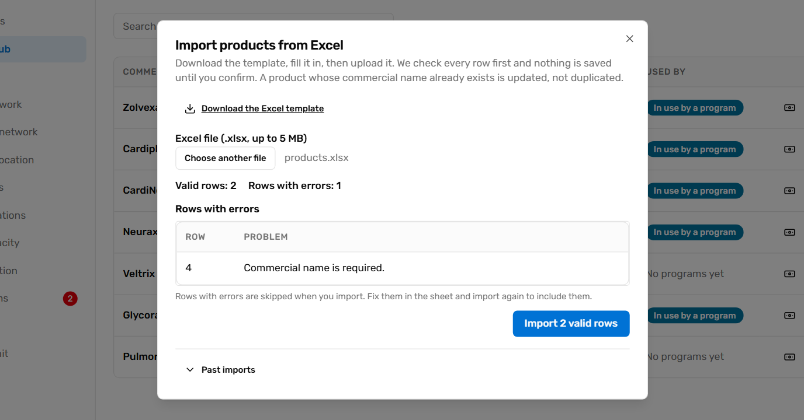
- 1Download the Excel template and fill in one product per row.
- 2Choose the filled-in file: an Excel .xlsx file of up to 5 MB.
- 3The portal checks every row first and counts the valid rows and the rows with errors. Nothing is saved yet.
- 4Rows with errors names each failing row and its problem.
- 5Import … valid rows saves the valid rows. Rows with errors are skipped: fix them in the sheet and import it again.
- 6Past imports lists earlier imports and what each one created, updated or skipped.
Price a product: batches
A product choice (a strength, and a pack size where the catalogue has them) gets its price from the batches you register. A choice with no batch has no price and cannot be delivered.
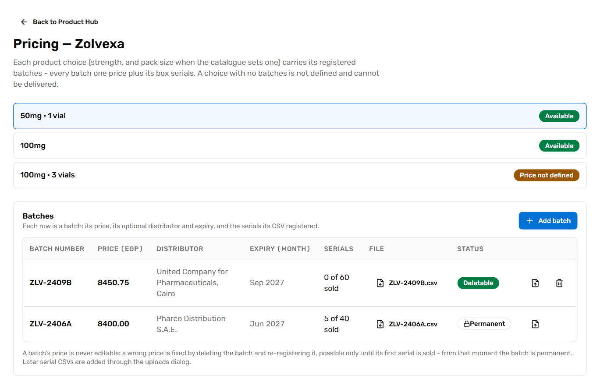
- 1The product choices. Click one to see its batches.
- 2Price not defined: this choice has no batch yet. Available means it can be delivered.
- 3Add batch registers a new batch for the selected choice.
- 4Permanent: a box of this batch has been sold, so the batch can no longer be deleted. Deletable means none has been sold yet.
- 5Opens the batch's serial files. Add a later serials file here: it waits as a draft until you confirm it, and a confirmed file can be reversed.
- 6Deletes the batch. This is only possible while none of its boxes has been sold.
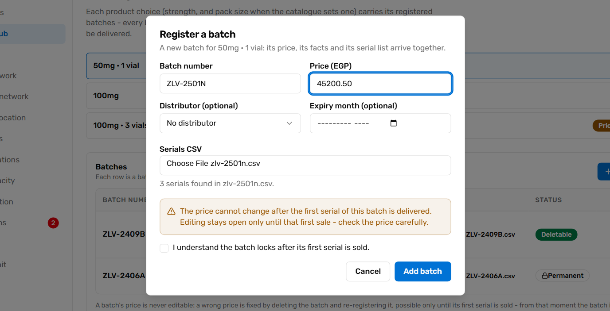
- 1Batch number.
- 2Price (EGP): the price of one box of this batch.
- 3Distributor (optional): chosen from the product's distributors.
- 4Serials CSV: a .csv file of up to 2 MB listing the batch's box serials, with a Serial column or one serial per line. The portal shows how many serials it found.
- 5Tick I understand the batch locks after its first serial is sold.
- 6Add batch registers the batch.
Programmes
A programme is one scheme: one drug, one discount, one network.
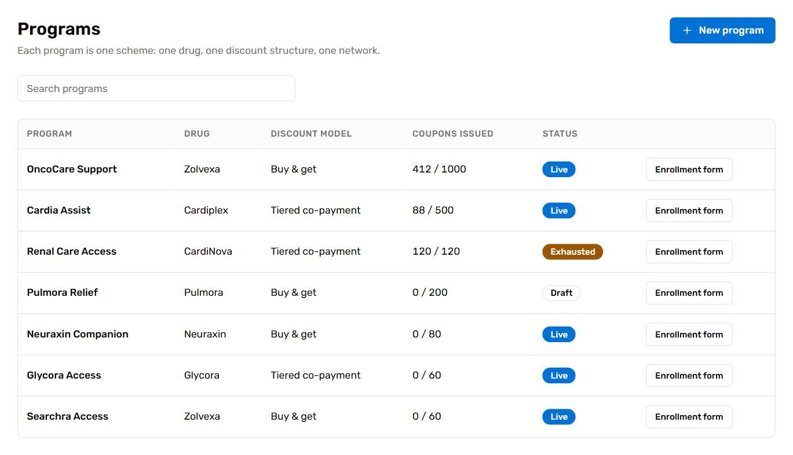
- 1New program starts the programme builder.
- 2Search programmes by name or drug.
- 3Click a programme's name to open its page.
- 4Coupons issued: coupons given out, out of the coupons funded.
- 5Status of the programme.
- 6Enrollment form opens the programme's enrolment form.
| Status | Meaning |
|---|---|
| Draft | Being set up. Nobody can be enrolled yet. |
| Live | Open for enrolment. |
| Exhausted | Every funded coupon has been used. New enrolments stop; patients who already hold a coupon finish their doses. |
| Stopped | Stopped for good. It can never go live again. |
Build a new programme
Press New program. The builder has eight steps, shown in a bar at the top. Continue checks the step on screen and moves on; you can also click any step in the bar to go back to it. What you type is kept while you move between steps. Nothing is saved until you save on the last step, Review & save; if you try to leave with unsaved changes, the portal asks Leave without saving? A new programme is saved as a draft: it enrols nobody until you launch it.
You can also fill the builder from an Excel file instead of typing: see Set up or copy a programme with Excel.
1. Identity & product
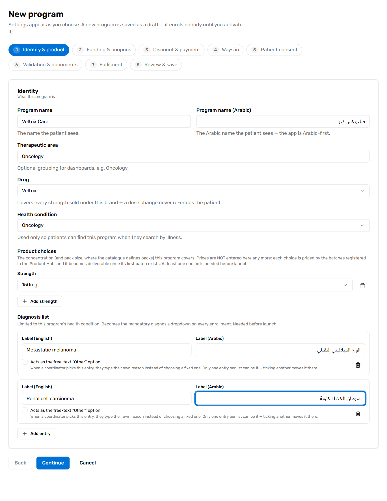
- 1The step bar. A tick marks each step you have completed.
- 2Program name: the name the patient sees.
- 3Program name (Arabic): the Arabic name the patient sees. The patient app is Arabic first.
- 4Drug: the product from the Product Hub. Only one programme can run on each drug.
- 5Product choices: press Add strength and pick each strength (and pack size) the programme covers. Prices come from the product's batches, not from here.
- 6Diagnosis list: press Add entry for each diagnosis, in English and Arabic. The doctor must pick one when enrolling a patient.
Therapeutic area is an optional grouping for the dashboards. Health condition helps patients find the programme when they search by illness.
2. Funding & coupons
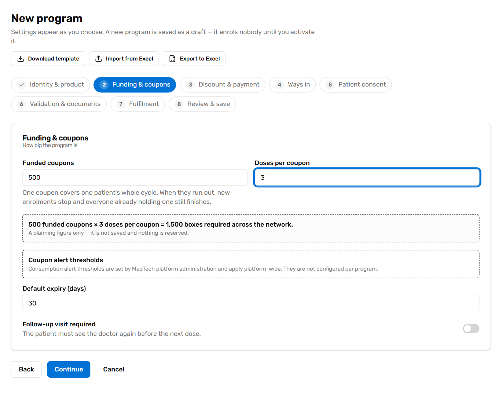
- 1Funded coupons: how many patients the programme pays for. One coupon covers one patient's whole course. When they run out, new enrolments stop.
- 2Doses per coupon: how many doses one patient receives.
- 3A planning figure: how many boxes the network will need. It is not saved and reserves nothing.
- 4Default expiry (days).
- 5Follow-up visit required: switch it on if the patient must see the doctor again before the next dose, then set the earliest and latest day.
Coupon alert thresholds are set by MedTech for the whole platform, not here.
3. Discount & payment
First choose the Discount model. Only the settings of the model you choose appear.
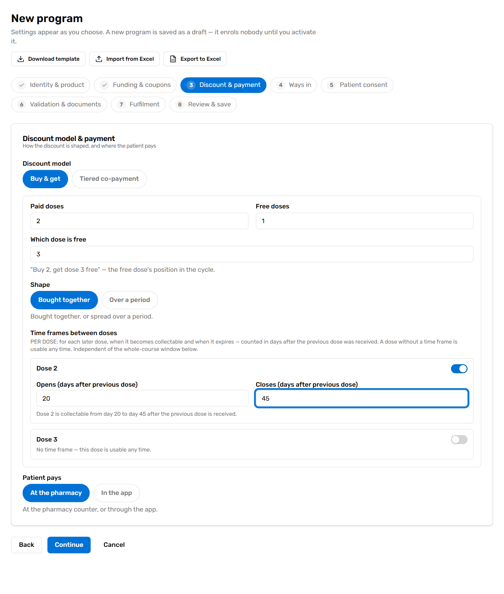
- 1Discount model: Buy & get or Tiered co-payment.
- 2Paid doses and Free doses. Together they must equal the doses per coupon.
- 3Which dose is free, for example 3 for "buy 2, get dose 3 free".
- 4Shape: the doses are Bought together, or spread Over a period. A period adds a whole-course window and a grace period.
- 5Time frames between doses: for each later dose, switch it on to set when it opens and closes, in days after the previous dose was received. A dose without a time frame can be collected at any time.
- 6Patient pays: At the pharmacy or In the app.
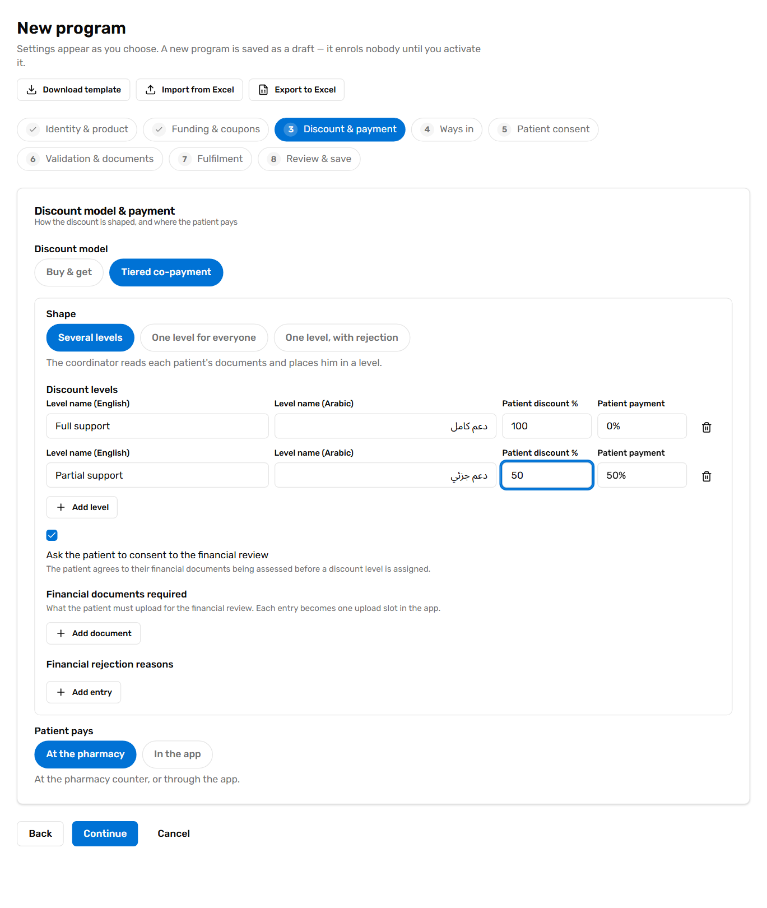
- 1Discount model set to Tiered co-payment.
- 2Shape: Several levels (the coordinator places each patient in a level), One level for everyone, or One level, with rejection (the coordinator may decline patients who do not qualify).
- 3Discount levels: a name in English and Arabic and the Patient discount % for each level. Add level adds another.
- 4Patient payment is worked out from the discount.
- 5Financial documents required: what the patient uploads for the financial review. You can also ask the patient to consent to that review, and list the Financial rejection reasons.
- 6Patient pays: At the pharmacy or In the app.
4. Ways in
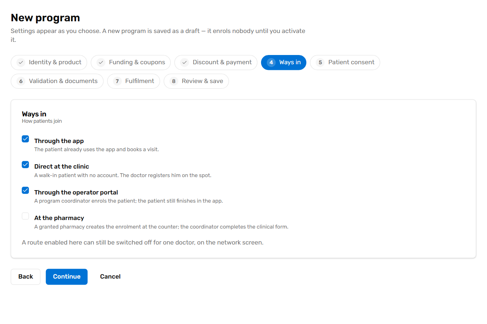
- 1Through the app: the patient already uses the app and books a visit.
- 2Direct at the clinic: a walk-in patient with no account; the doctor registers them on the spot.
- 3Through the operator portal: a Program Coordinator enrols the patient, who then finishes in the app.
- 4At the pharmacy: a pharmacy you allow creates the enrolment at the counter, and a coordinator completes the form.
- 5A way in switched on here can still be switched off for one doctor, on the Doctor network page.
Switch on at least one way in. At the pharmacy also needs a MedTech admin to allow pharmacy enrolment for your organisation; until then, the programme cannot be saved with it.
5. Patient consent
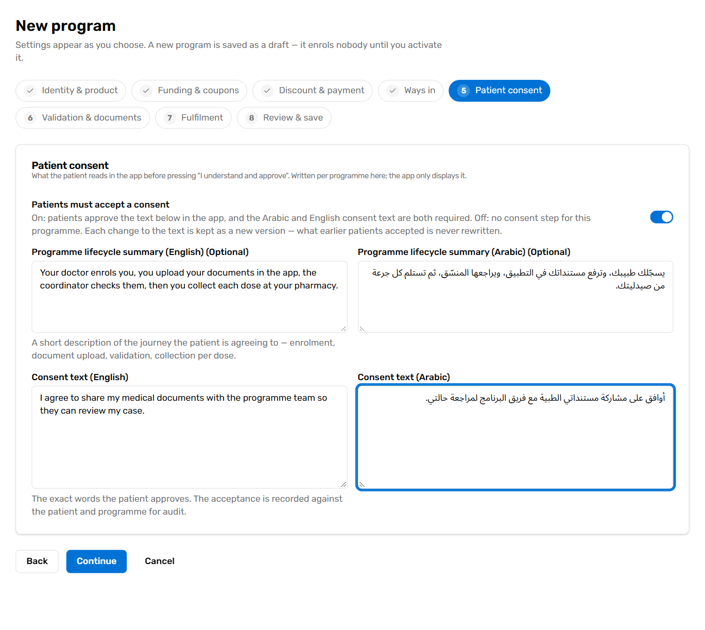
- 1Patients must accept a consent: when this is on, patients approve the text below in the app.
- 2Programme lifecycle summary: a short, optional description of the patient's journey, in English and Arabic.
- 3Consent text (English): the exact words the patient approves.
- 4Consent text (Arabic). Both languages are required when consent is on.
Each change to the text is kept as a new version. What earlier patients accepted is never rewritten.
6. Validation & documents
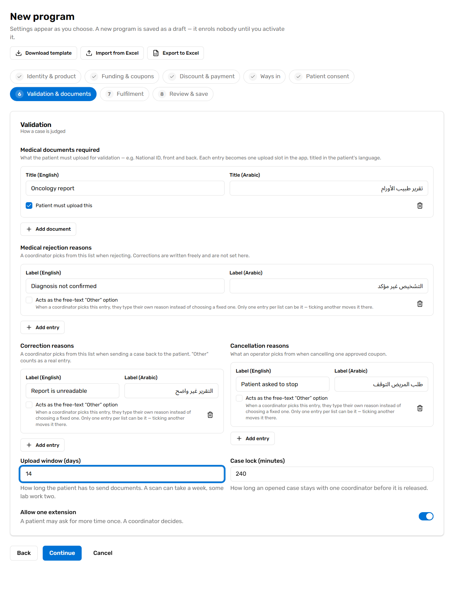
- 1Medical documents required: each entry becomes one upload in the patient app. Tick Patient must upload this for the required ones.
- 2Medical rejection reasons: the list a coordinator picks from when rejecting a case.
- 3Correction reasons: the list a coordinator picks from when sending a case back to the patient.
- 4Cancellation reasons: the list used when one approved coupon is cancelled.
- 5Upload window (days): how long the patient has to send the documents.
- 6Case lock (minutes): how long an opened case stays with one coordinator before it is released.
- 7Allow one extension: the patient may ask once for more time to upload; a coordinator decides.
In each reason list you may tick Acts as the free-text “Other” option on one entry. A coordinator who picks it types their own reason.
7. Fulfilment
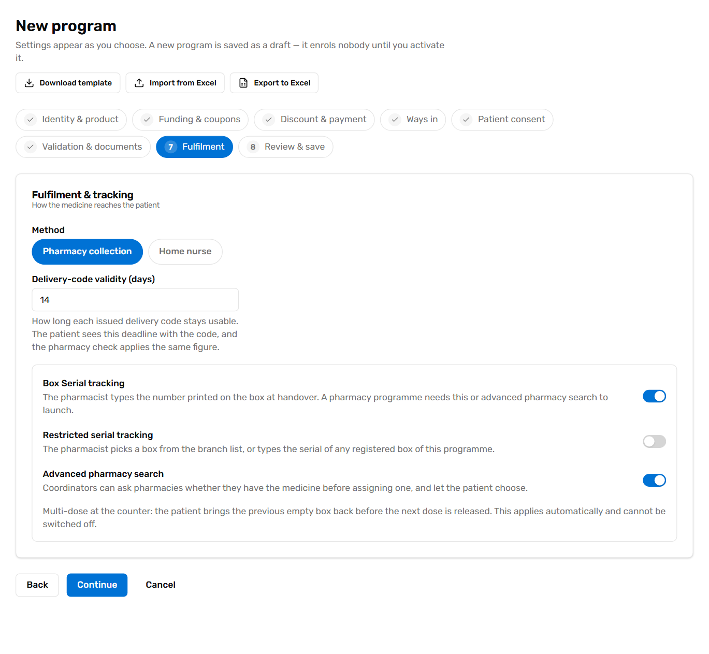
- 1Method: Pharmacy collection or Home nurse.
- 2Delivery-code validity (days): how long each delivery code can be used. The patient sees this deadline, and the pharmacy check uses it.
- 3Box Serial tracking: the pharmacist types the serial printed on the box at handover. A pharmacy programme needs this or Advanced pharmacy search to launch.
- 4Restricted serial tracking: when on, you load each pharmacy's serial list and the pharmacist can only pick from that branch's unused serials. When off, the pharmacist picks from the branch list or types the serial of any registered box of the programme.
- 5Advanced pharmacy search: switch it on to let coordinators ask pharmacies for the medicine before assigning one.
- 6The line under the switch says what it does now. On: coordinators can ask pharmacies whether they have the medicine, and let the patient choose among those that said yes. Off: coordinators assign a pharmacy directly.
- 7When a coupon has several doses, the patient brings back the previous empty box before the next dose is handed over. This always applies.
Asking a pharmacy is only a question: it assigns nothing and shares no patient details with the pharmacy. How the three switches combine:
| Box Serial tracking | Restricted serial tracking | Advanced pharmacy search |
|---|---|---|
| On | On | Not available: it is switched off and greyed out, and reads Not available while restricted serial tracking is on. |
| On | Off | Can be switched on. |
| Off | (not offered) | Can be switched on. The programme can then launch without Box Serial tracking, and its pharmacy stock reads Stock not tracked. |
For Home nurse, write the Preparation instructions the patient reads before the nurse visit, in English and Arabic. A home-nurse programme is always paid in the app.
8. Review & save
Continue on the Fulfilment step opens Review & save, a summary of the whole programme. Press Create program to save it as a draft (when you edit a saved programme, the button reads Save). You are taken back to the programme list. This is the only place the builder saves.
Set up or copy a programme with Excel
Above the step bar, the builder has three Excel buttons. Only Operator Admins and the Super Admin see them.
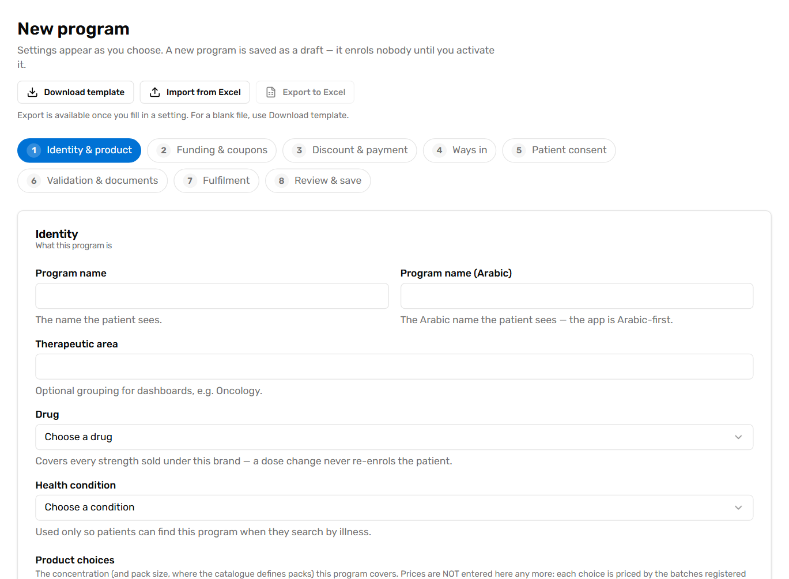
- 1The builder: New program, or Edit program for a saved one.
- 2Download template: a blank Excel template to fill in.
- 3Import from Excel: fills the builder's steps from a filled-in template.
- 4Export to Excel: saves everything the builder holds now as an Excel file, the same layout as the template.
The template. Each settings sheet has four columns, Key, Field (EN), Field (AR) and Value, with one setting per row: you type only in Value. The sheets follow the builder's steps:
| Sheet | What you fill in |
|---|---|
| Identity | Programme name in English and Arabic; the product and the health condition, each chosen from a dropdown of your office's own list |
| Funding | Funded coupons, doses per coupon |
| Financial | Discount model, shape, paid and free doses, which dose is free, window and grace-period days, tier shape, whether the patient consents to the financial review |
| Routes | The four ways in, each TRUE or FALSE |
| Consent | Consent text and lifecycle summary, in English and Arabic |
| Validation | Case lock (minutes), upload window (days), the upload extension, default expiry (days), the follow-up visit and its earliest and latest days |
| Fulfilment | Method, Box Serial tracking, restricted serial tracking, serial tracking, where the patient pays, delivery-code validity (days), expiry warning (days), Advanced pharmacy search, preparation instructions in English and Arabic, and the nurse provider's name and contact |
The lists have a sheet each, with one row per entry: Strengths, Diagnoses, Tiers, DoseWindows, Documents, MedicalRejectionReasons, FinancialRejectionReasons, CorrectionReasons and CancellationReasons. A hidden sheet holds your office's products and health conditions for the dropdowns.
Some dropdowns show short codes instead of the builder's words:
| In the sheet | In the builder |
|---|---|
| cycleBased / tieredCoPayment | Buy & get / Tiered co-payment |
| singleOperation / timeWindow | Bought together / Over a period |
| singleLevel / multipleLevels / fixedLevelWithRejection | One level for everyone / Several levels / One level, with rejection |
| pharmacy / homeNurse | Pharmacy collection / Home nurse |
| none / free / restricted (serial tracking) | Box Serial tracking off / Box Serial tracking on / Box Serial tracking and Restricted serial tracking both on |
| atPharmacy / inApp | At the pharmacy / In the app |
Importing. Press Import from Excel and choose the file (an .xlsx of up to 5 MB). The portal checks it and counts the errors and warnings. Press Fill the builder to put its values into the steps; if you had changes you had not saved, the button reads Replace my changes, because the file replaces them.
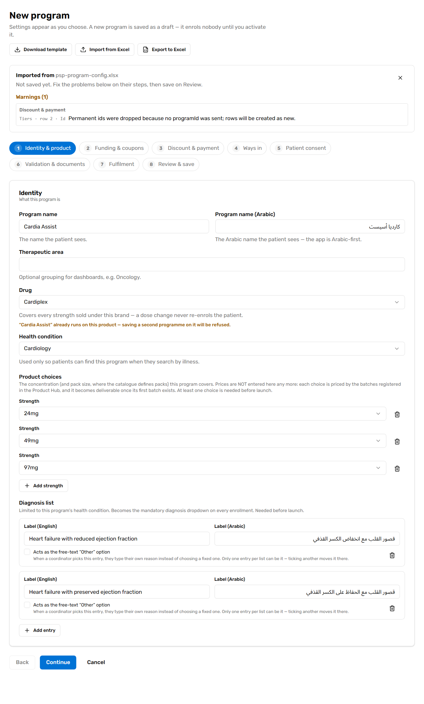
- 1Imported from names the file you used.
- 2Not saved yet. Check each step, fix any problem listed, then save on Review & save.
- 3Hides this result.
- 4Warnings: listed by builder step, each with its sheet, row and column. Here the file came from another programme, so its list rows are added as new ones.
- 5The steps are filled in from the file, starting with Program name.
- 6The builder still checks the values: here the copied drug already has a programme, so choose another drug before you save.
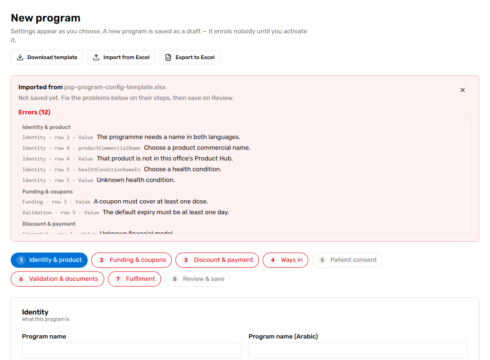
- 1Not saved yet. The problems are listed below, and they must be fixed on their steps before you save.
- 2Errors: what must be fixed.
- 3The errors are grouped by the builder step they belong to; each names the sheet, row and column, then what to fix.
- 4A step with an error is marked in red in the step bar, and the builder opens on the first one.
Copying or editing offline. Open a saved programme with Edit in builder and press Export to Excel: you get a filled-in file with all the builder's settings and lists. Import it into New program to start a copy, or change it in Excel and import it back into the same programme. The enrolment form, the networks and the places are not in the file.
Check and launch a programme
Open the programme from the list. Its page shows every setting, the patient consent and the launch checks.
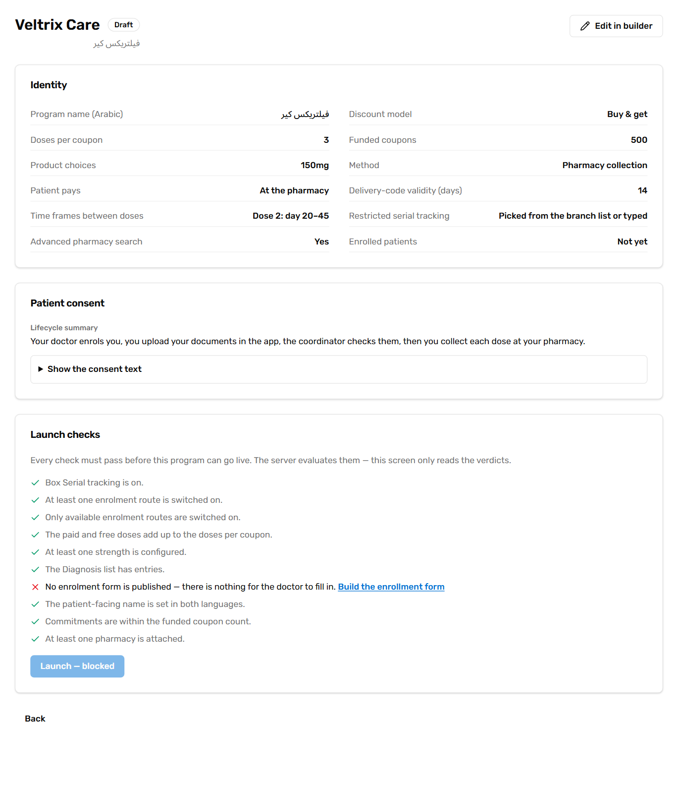
- 1Edit in builder reopens the builder on this programme.
- 2The programme's settings as saved, including whether Advanced pharmacy search is on.
- 3Launch checks: every check must pass before the programme can go live. A green tick shows what is in place; a red cross says what is still missing. A pharmacy programme needs Box Serial tracking or Advanced pharmacy search switched on.
- 4Build the enrollment form takes you straight to the form when that check fails.
- 5Launch — blocked while a check fails. When all pass, the button reads Launch this program: press it and the programme goes live.
Change or stop a programme
You can change a programme at any time with Edit in builder. Once a patient is enrolled, eight settings patients have already accepted are frozen:
- the doses per coupon;
- the discount model;
- which dose is free;
- the discount levels' percentages;
- where the patient pays;
- the fulfilment method;
- Box Serial tracking;
- Advanced pharmacy search.
The programme page then reads Yes — configuration is frozen. To change those settings, stop the programme and create a new one.
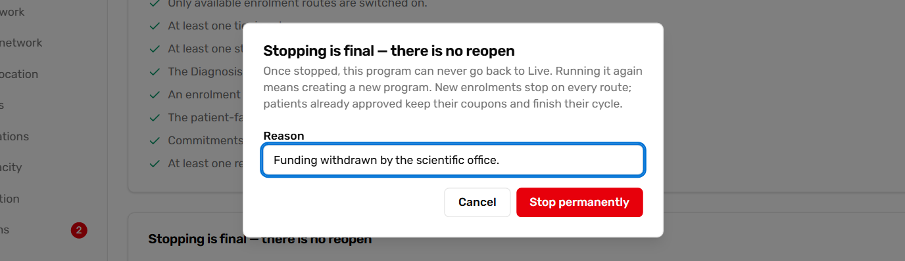
- 1Stopping is final — there is no reopen. New enrolments stop on every route. Patients already approved keep their coupons and finish their course.
- 2Reason: required, and recorded in the audit trail.
- 3Stop permanently stops the programme.
You open this from Stop new enrolments — permanently at the bottom of a live programme's page.
The enrolment form
The enrolment form is the questionnaire the doctor answers to enrol a patient. Without a published form, nobody can be enrolled on any route. Open it with Enrollment form in the programme list.
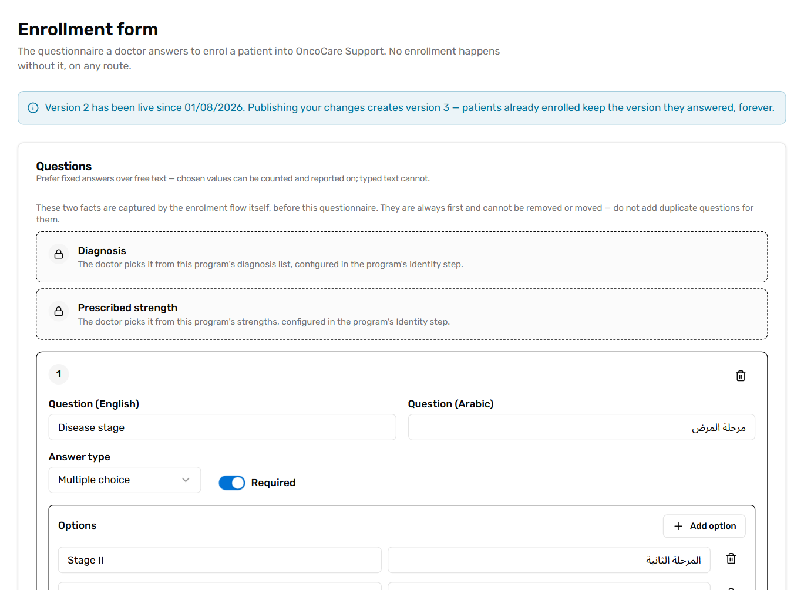
- 1Under the title, a line tells you which version is live. Publishing your changes creates the next version; patients already enrolled keep the version they answered.
- 2Diagnosis and Prescribed strength are always asked first, from the programme's own lists. You cannot remove them, so do not add them again as questions.
- 3Question (English) and Question (Arabic).
- 4Answer type: Multiple choice, Dropdown, Free text or Checkmark.
- 5Required: the doctor must answer.
- 6Add option adds an answer to a choice question. A choice question needs at least two options.
Prefer fixed answers to free text: chosen answers can be counted in the reports, typed text cannot.
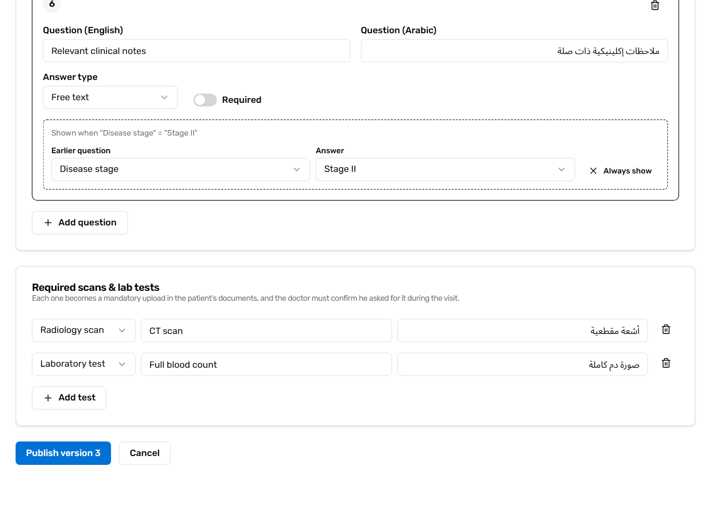
- 1Show only when… makes a question appear only after a certain answer. Choose the Earlier question…
- 2…and the Answer that shows it. Always show removes the condition.
- 3Add question adds a question at the end.
- 4Required scans & lab tests: each test becomes a required upload for the patient, and the doctor confirms they asked for it.
- 5Add test: choose Radiology scan or Laboratory test and name it in both languages.
- 6Publish version … makes your changes live. Cancel leaves without publishing.
If something is missing, the form says This form can't be published yet and highlights the fields to fix.
Doctor network
Each programme has its own network of doctors who can enrol patients. Doctors come from the MedTech registry; you never create them here.
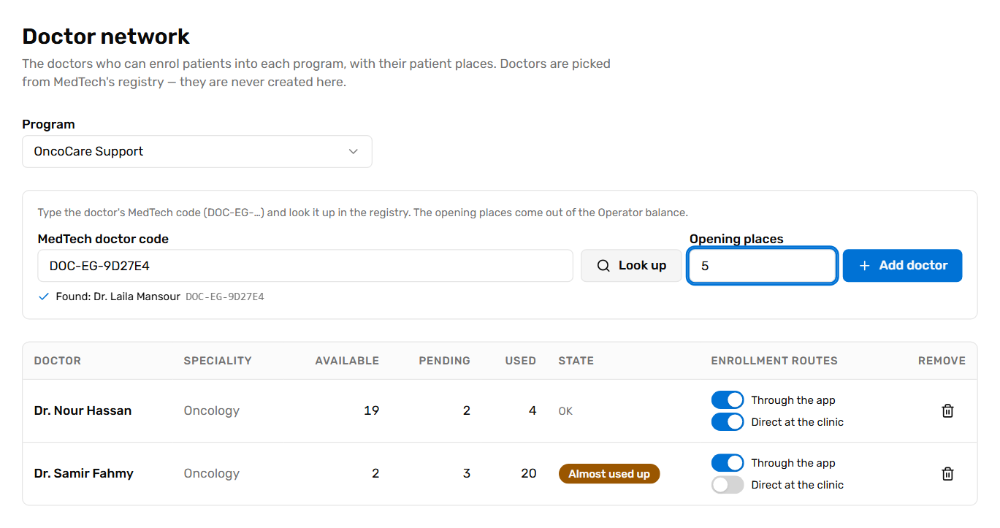
- 1Program: choose the programme first.
- 2MedTech doctor code: type the doctor's code (it starts with DOC-EG-) and press Look up.
- 3The registry entry found for the code. Check it is the right doctor.
- 4Opening places: how many patients this doctor may enrol to start with. They come out of the Operator balance.
- 5Add doctor adds the doctor to the network.
- 6Enrollment routes: switch a way in on or off for this doctor only.
- 7The bin removes the doctor. A doctor who already has enrolled patients cannot be removed.
The table shows each doctor's places: Available, Pending and Used. Almost used up warns that a doctor is running low.
Pharmacy network
Each programme also has the pharmacies that hand its medicine over, with their stock.
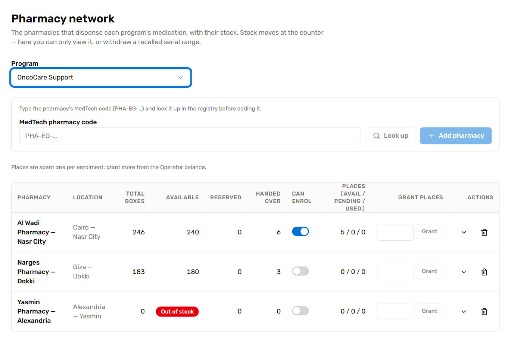
- 1MedTech pharmacy code: type the branch's code (it starts with PHA-EG-)…
- 2…press Look up, check the branch found, then press Add pharmacy.
- 3Stock per branch: total boxes, available, reserved and handed over. Out of stock means no box is available.
- 4Can enrol: lets this branch enrol patients at the counter.
- 5The branch's enrolment places: available, pending and used.
- 6Type a number in Grant places and press Grant to give the branch more places from the Operator balance.
- 7Shows the branch's boxes one by one, with the state of each serial.
Can enrol and the places columns appear only when the programme's At the pharmacy way in is switched on. On a programme with Box Serial tracking off, no boxes are counted, so the Available column reads Stock not tracked instead of a number.
You cannot change stock here: stock moves when the pharmacy hands a dose over. Two things you can do:
- Withdraw a recalled range. In a branch's stock list, press Withdraw a serial range, enter the From serial and To serial, and press Withdraw range. Every box in the range is taken out of the branch's stock and kept on record. This cannot be undone here.
- Load serials for a restricted programme. When the programme uses restricted serial tracking, each branch has a serial inventory button. Paste the serials delivered to the branch, one per line, into Add serials (one per line) and press Add serials. Duplicates are skipped.
The bin removes a pharmacy from the programme: it stops receiving new patients.
Patient places
A patient place is what an enrolment spends: one place per patient. Coupon allocation shows who holds the places of a programme and how its coupons are being used.
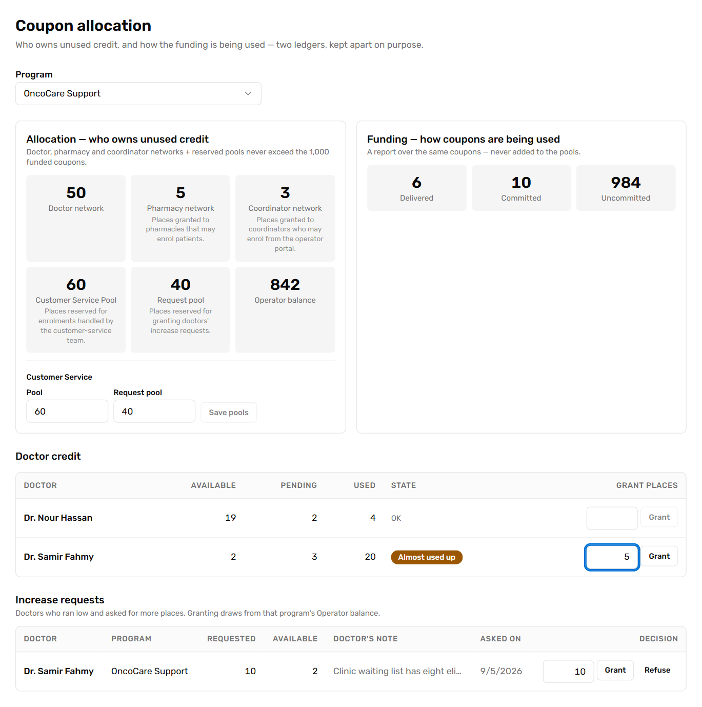
- 1Allocation — who owns unused credit: the places held by the doctor, pharmacy and coordinator networks and by the two reserved pools. Together they never exceed the funded coupons.
- 2Operator balance: the places nobody holds yet. Every grant comes from here.
- 3Set the Customer Service Pool and the Request pool (kept for doctors' requests), then press Save pools.
- 4Funding — how coupons are being used: coupons delivered, committed and not yet committed. It is a report and is never added to the pools.
- 5Doctor credit: each doctor's available, pending and used places.
- 6Type a number in Grant places and press Grant to give a doctor more places.
- 7Increase requests: doctors who ran low and asked for more. Change the number if needed, then press Grant or Refuse.
If the Operator balance cannot cover a grant, the portal refuses it and tells you how many places remain.
Let pharmacies and coordinators enrol
Besides doctors, a programme can let pharmacies and Program Coordinators enrol patients. Three things are needed:
- In the builder, switch on the way in: At the pharmacy or Through the operator portal (step 4).
- Allow the enroller: Can enrol in the Pharmacy network for a pharmacy, or in the coordinator's Program access for a coordinator.
- Give them places with Grant.
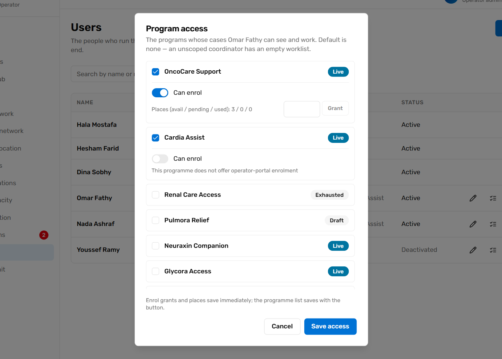
- 1Tick each programme whose cases the coordinator may see and work.
- 2Can enrol: lets the coordinator enrol patients on this programme. It is only offered when the programme allows enrolment through the operator portal.
- 3The coordinator's places (available, pending, used), with a Grant button to add more.
- 4Can enrol and places are saved at once; the programme list is saved with the button.
- 5Save access saves the ticked programmes.
Users
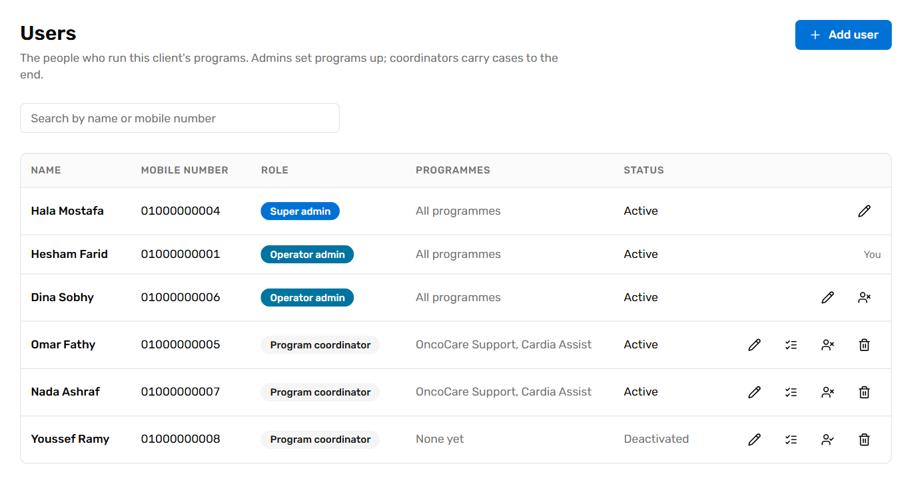
- 1Add user creates an account.
- 2Search by name or mobile number.
- 3The role of each person: Super admin, Operator admin or Program coordinator.
- 4The pencil renames a user. The new name appears everywhere, including later activity.
- 5Program access (coordinators only) opens the access shown above.
- 6Deactivates the user, or activates a deactivated user again.
- 7The bin removes the user, who loses access to this workspace.
Admins always see every programme, so their rows have no access button. Your own row reads You and has no buttons. Nobody can deactivate or remove the Super Admin.
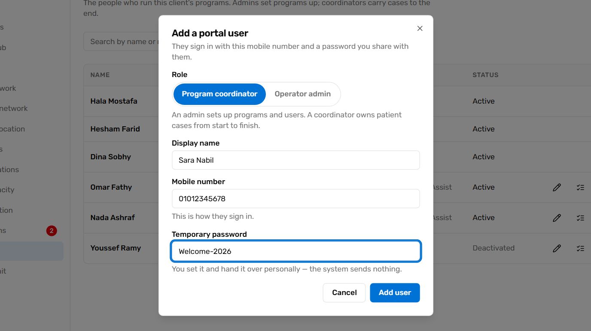
- 1Display name: the person's name as the portal shows it.
- 2Mobile number: the number they sign in with.
- 3Temporary password: at least 9 characters. You set it and hand it over in person; the system sends nothing.
- 4Role: Program coordinator or Operator admin.
- 5Add user creates the account.
After adding a coordinator, open their Program access and tick their programmes.
Home nurse: capacity and visits
In a home-nurse programme each dose is given at a nurse visit that the patient books in the app. Nurse capacity decides which slots there are to book.
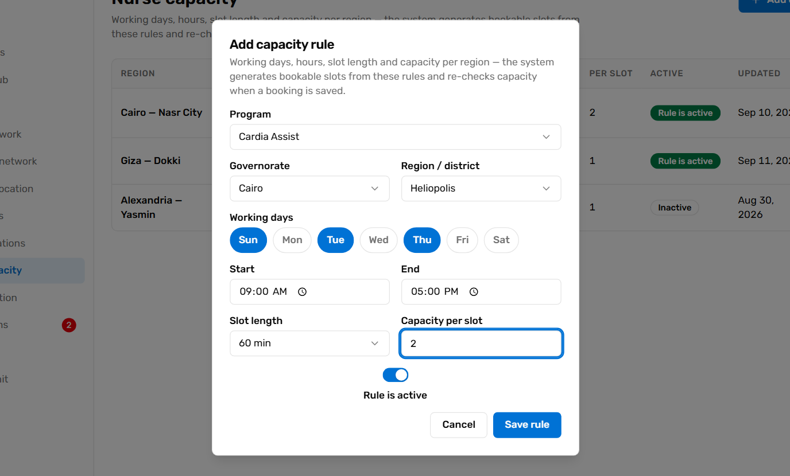
- 1Program: a home-nurse programme. Rules cannot be set on pharmacy programmes.
- 2Governorate.
- 3Region / district the rule covers.
- 4Working days: click each day the nurses work.
- 5The Start and End time, and the Slot length.
- 6Capacity per slot: how many visits one slot can take. At least 1.
- 7Rule is active: switch it off to pause the rule without losing it.
Press Save rule. The Nurse capacity page lists every rule; use Edit to change one. A home-nurse programme cannot launch until at least one region has an active rule.
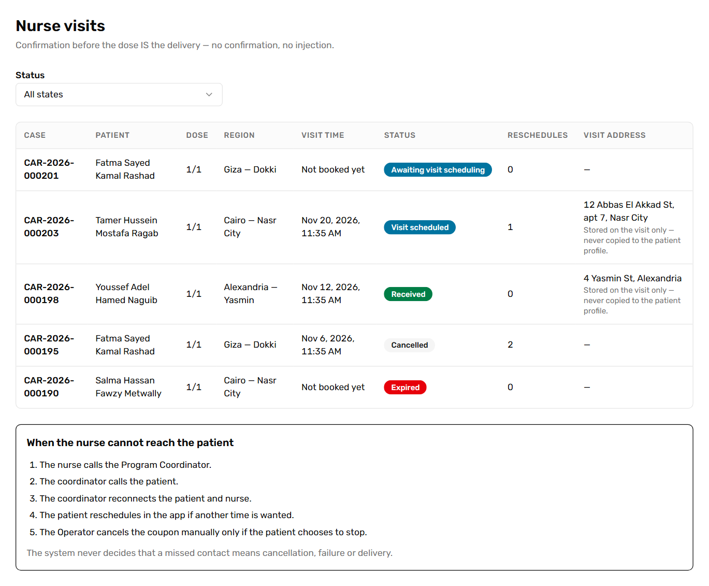
- 1Filter the visits by status.
- 2The visit's status, from Awaiting visit scheduling to Received.
- 3The visit address is kept on the visit only, never copied to the patient's profile.
- 4When the nurse cannot reach the patient: the steps everyone follows.
- 5The system never decides that a missed contact means cancellation, failure or delivery.
Coupon limit
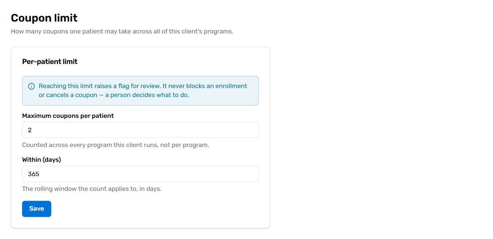
- 1Reaching the limit raises a flag for review. It never blocks an enrolment or cancels a coupon: a person decides what to do.
- 2Maximum coupons per patient, counted across every programme of this client.
- 3Within (days): the rolling period the count covers.
- 4Save.
Audit trail
The audit trail lists every configuration and case event in this office, newest first. Entries are never edited or removed.
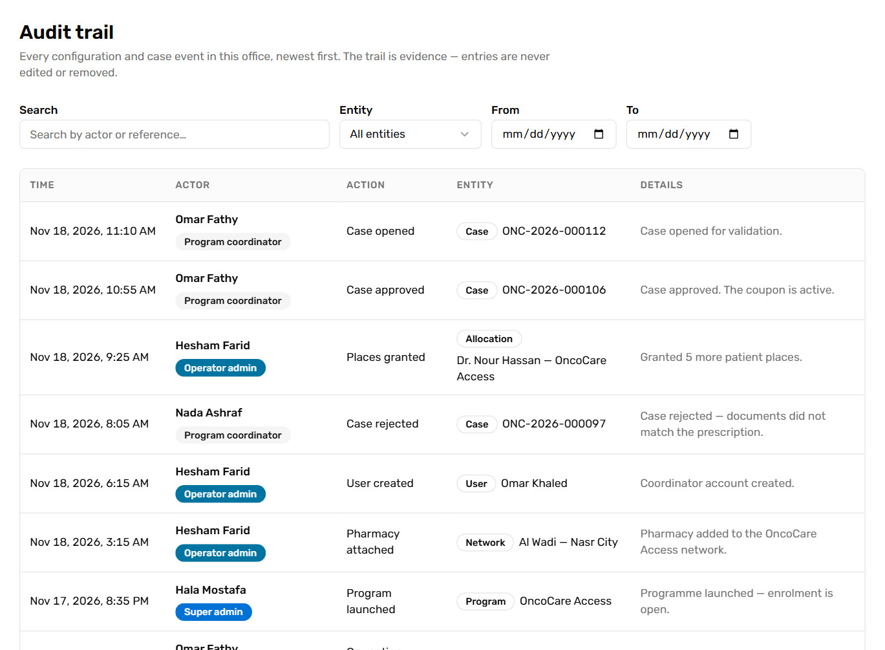
- 1Search by person or reference.
- 2Entity: show only one kind of record, such as programmes, cases, users or products.
- 3From and To: a date range.
- 4Actor: who did it, and their role.
- 5Action: what was done.
- 6Details: the change in one sentence.
Dashboards
Dashboards shows a fixed set of figures about your programmes.
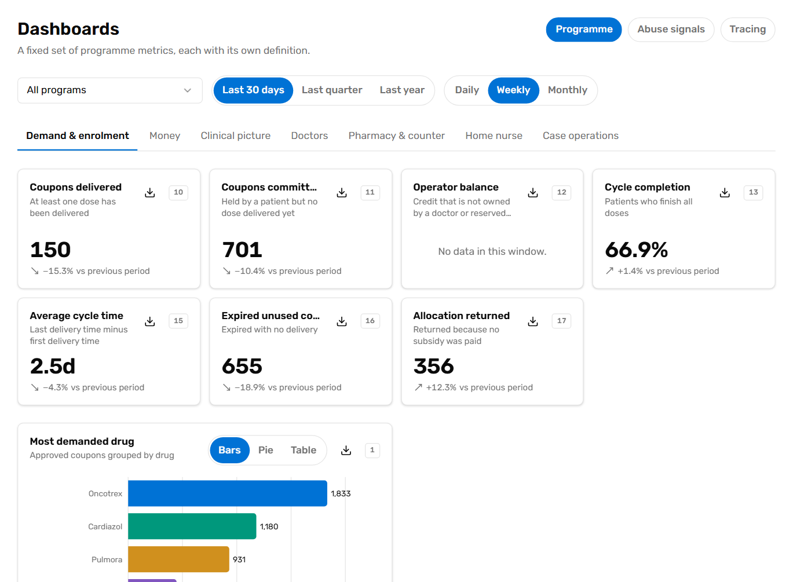
- 1Three views: Programme (shown here), Abuse signals and Tracing.
- 2Show all programmes or one.
- 3The period: Last 30 days, Last quarter or Last year.
- 4Group the figures by day, week or month.
- 5The sections: Demand & enrolment, Money, Clinical picture, Doctors, Pharmacy & counter, Home nurse and Case operations.
The headline figures compare with the previous period. Each figure's download button exports it as a CSV file, and some charts switch between bars, pie and a table.
- Abuse signals lists patterns that may need a look, such as one patient holding several coupons for the same drug. A signal only raises a flag for a person to review; nothing is blocked or cancelled automatically.
- Tracing follows one item. Choose a view (for example One patient's full journey or One coupon's history), type its Subject reference (a code, never a name) and press Trace. Every pending item lists everything waiting on someone right now.
Compensation reports
A compensation report shows what each delivered dose's discount owes the pharmacy. The portal generates and stores each report; the stored file is the official copy.
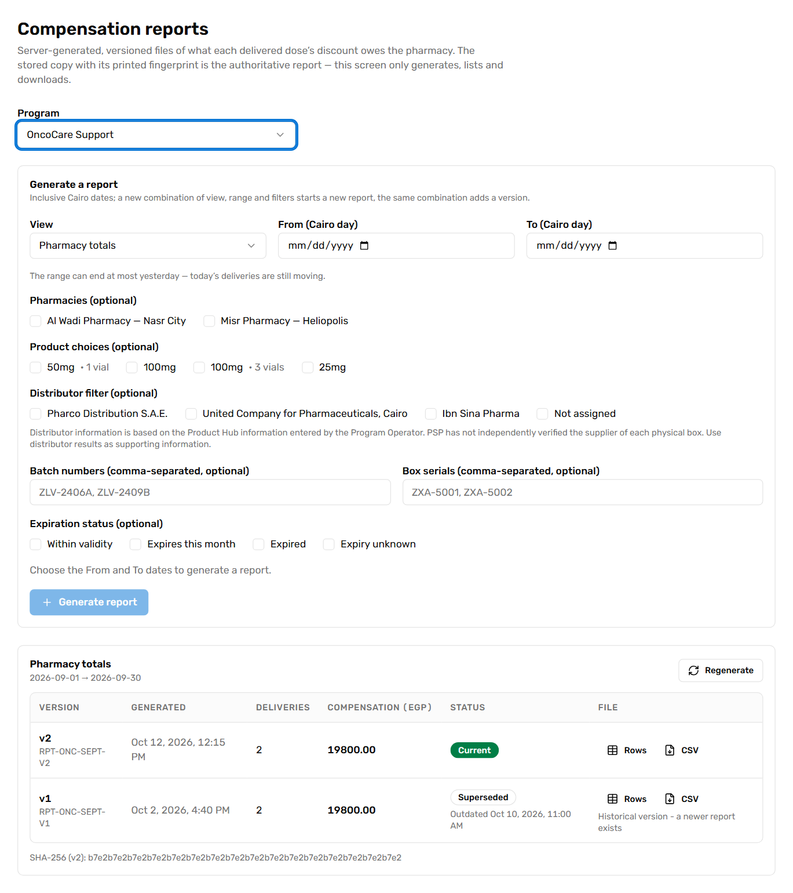
- 1Program: choose the programme.
- 2View: Pharmacy totals or Distributor breakdown.
- 3From (Cairo day) and To (Cairo day). The range can end yesterday at the latest.
- 4Optional filters: pharmacies, product choices, distributors, batch numbers, box serials and expiry status.
- 5Generate report.
- 6Regenerate makes a new version of a report with its original range and filters.
- 7Rows shows a version's deliveries on screen; CSV downloads its stored file.
Generating the same view, range and filters again adds a new version. The older one is marked Superseded and its file is kept. If no delivery matches, nothing is generated.
Notifications
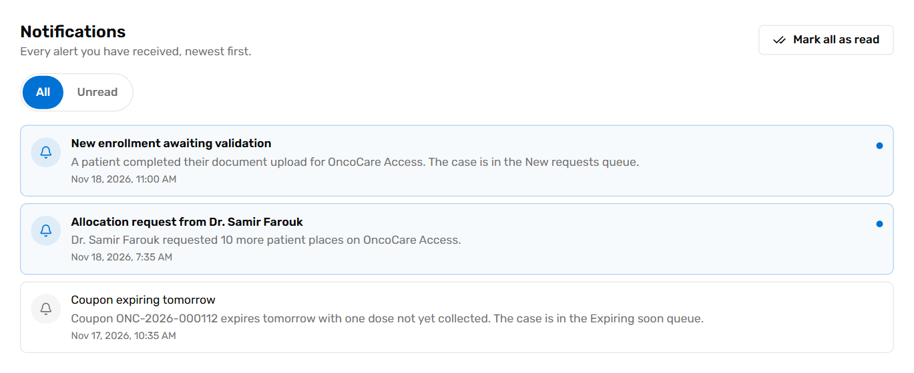
- 1Mark all as read clears the unread marks.
- 2Show All alerts or Unread only.
- 3Each alert, newest first.
You are told, for example, when a doctor asks for more places or when a coupon is about to expire.
Case work
Validating cases, the case worklist, enrolling a patient from the portal and following coupons that are about to expire are the coordinators' work. On programmes with Advanced pharmacy search switched on, coordinators can also ask pharmacies whether they have the medicine before assigning one. The Nurse visits and Near expirations pages are open to you too. All of this is in the Coordinator guide.
For the Super Admin
The Super Admin uses the same portal, with the same pages and powers as an Operator Admin, and a few differences:
- Removing admins. Only the Super Admin can remove an Operator Admin. An Operator Admin can create and deactivate other admins, but has no remove button on their rows.
- One Super Admin. The Super Admin account cannot be deactivated or removed, and no one can create a second one: the role choice offers only Program coordinator and Operator admin.
- Enrolment cycle chart. On Dashboards, the Super Admin also sees where cases wait between enrolment and collection.
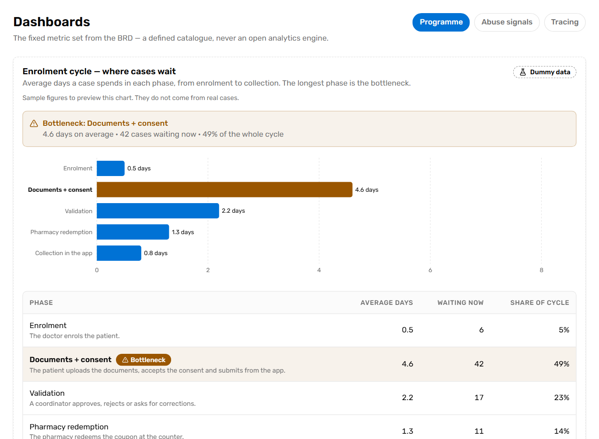
- 1Enrolment cycle — where cases wait: the average days a case spends in each phase, from enrolment to collection.
- 2Dummy data: for now the chart shows sample figures, not your real cases.
- 3The longest phase, the bottleneck, with its average days and the cases waiting in it now.
- 4The table lists each phase with its average days, cases waiting now and share of the whole cycle.
Quick answers
Why can't I save a second programme on the same drug? Only one programme can run on each drug.
I set up a programme but the launch button stays blocked. Read the red crosses under Launch checks. The usual ones are a missing enrolment form, an empty diagnosis list, no pharmacy in the network, or a pharmacy programme with both Box Serial tracking and Advanced pharmacy search off.
A doctor cannot enrol anyone. Check that the programme is live, that the doctor is in its network with available places, and that the way in is switched on for that doctor.
A coordinator sees no cases. Open Users, then their Program access, and tick their programmes.
I typed a wrong batch price. Delete the batch and register it again, while no box of it has been sold.
Can I undo stopping a programme? No. Stopping is final; create a new programme instead.